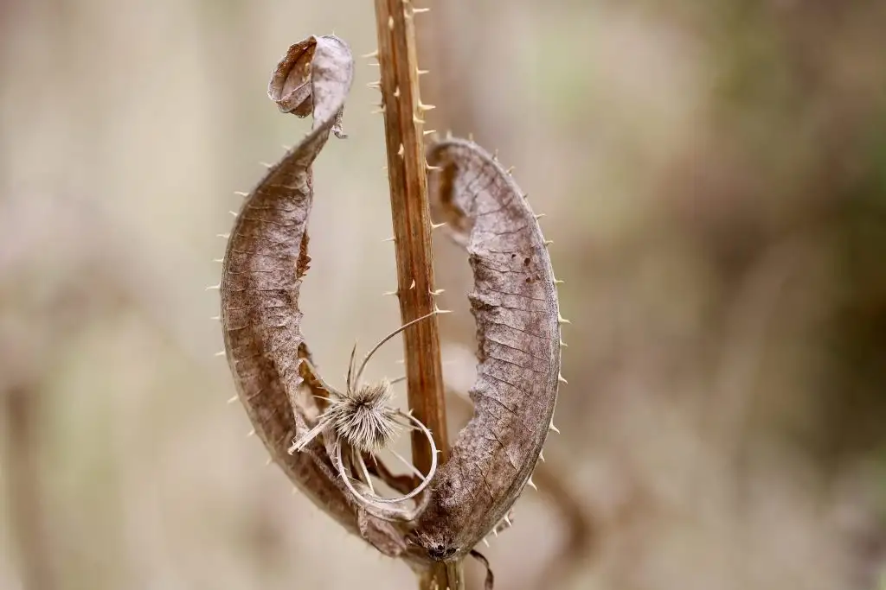

Comerás flores, de Lucía Solla Sobral

Es este un libro que en condiciones normales no habría leído. Me acerqué a él por recomendación de una alumna y gracias al préstamo de una compañera. El libro va deslizándose hacia una profunda amargura, aunque después, sin resultar naïf, se inclina por una sensación que solo se me ocurre calificar de alivio o desahogo ante las terribles circunstancias que le toca vivir a la protagonista.
Las relaciones personales siempre están sujetas a fracasos, amarguras y decepciones. De describir ese campo «finito, pero ilimitado» se ha encargado la literatura, la música, el cine y la televisión (hoy en día en su versión en streaming, que vienen a ser videoclubs virtuales de productos de consumo doméstico en masa), la» cultura», en definitiva, desde siempre.
Las particularidades de esta obra son dos:
Un estilo singular, más próximo a los modos y estilos de los jóvenes: oraciones caóticas, rupturas de sentido, amalgamas de significado que se deslizan a lo poético con maestría. Quizá refleje bien lo que ocurre en el interior de personas donde las tecnologías contemporáneas definen la conciencia de un modo predominante y prácticamente total. La unidad de la conciencia no cabe duda de que, si no está rota por completo, al menos está afectada por una dispersión atencional sin precedentes, con interrupciones, solapamientos, procesos paralelos, interferencias entre experiencias que hace de nuestra existencia una secuencia más bien discontinua. Todos estos aspectos quedan muy bien reflejados.
El segundo aspecto tiene más que ver con la descripción de la propia vivencia de la protagonista en relación con una pareja que la maltrata hasta la náusea, pero que ella tolera a causa de su capacidad de seducción. La autora transmite una veracidad a la narración sin necesidad de forzar la historia ni de introducir ningún elemento escabroso adicional, más allá de lo que la propia narración va provocando: cómo la protagonista cobra conciencia de esta situación y se decide a afrontarla constituye sin duda la parte más dolorosa.
La influencia de su padre muerto es otro matiz interesante. La familia aparece ni como una disfuncionalidad perfecta (algo que especialmente las series de televisión yankis han reiterado hasta «la risa o el asco»), pero sin ser ese reducto amanerado más propio del costumbrismo hispano igualmente hilarante o repulsivo.
En definitiva una obra interesante que vale la pena leer.
P.D. La protagonista empieza filosofía pero se lo deja a cambio del periodismo. Hay que saber rectificar a tiempo. He ahí una moraleja interesante.
Publicado originalmente en PortalEdu. Texto e imágenes conservados de la publicación original.